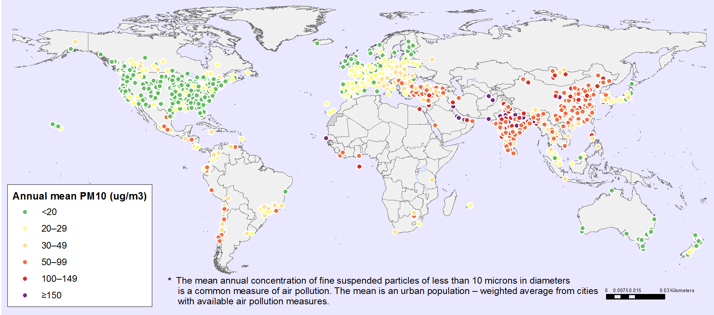
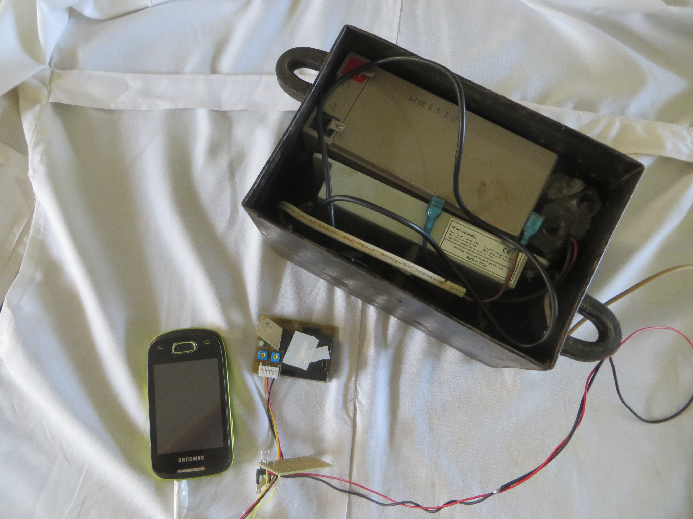
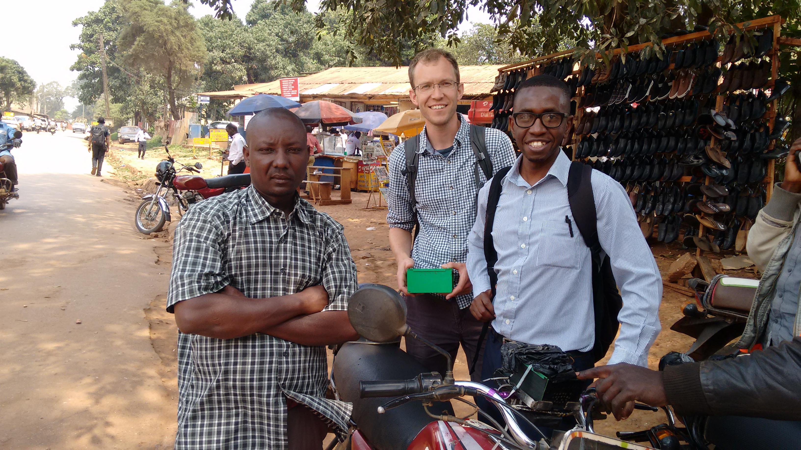
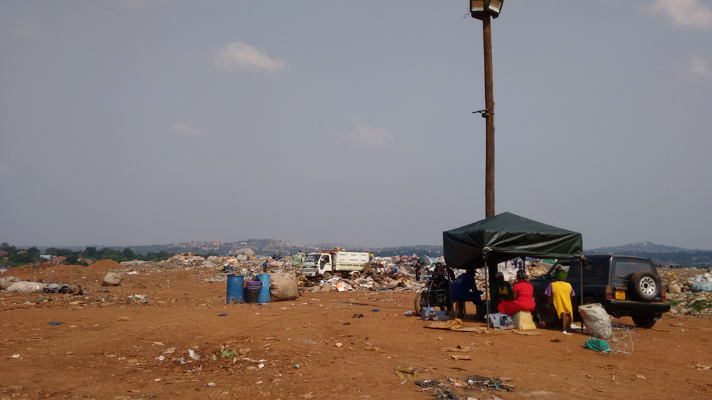
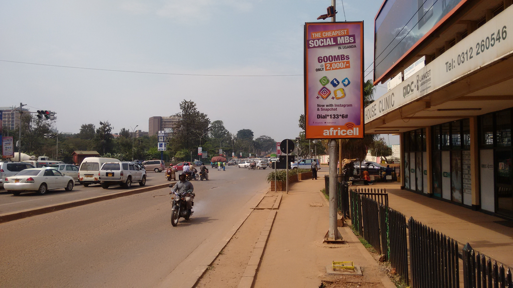

Air Pollution: Kampala
Presented by Mike Smith, University of Sheffield
michaeltsmith.org.uk
m.t.smith@sheffield.ac.uk
@mikethomassmith
Why does it matter?
In 2012, 2.6 million people died due to outdoor air pollution (mostly heart disease or stroke).
Summary: Air pollution is a big deal.
Note: We'll focus on PM2.5.
Whiteboard
WHO press release 2014: http://www.who.int/mediacentre/news/releases/2014/air-pollution/en/
How bad is it?
Only two papers about Kampala's air quality (Stephan Schwander's group), and a new sensor at the US embassy.

(white board)
Project development
Began with trying the Shinyei sensor hooked up to a phone (2014).


Bodaboda deployment
Engineer Bainomugisha new PI. Ssematimba Joel hardware dev.
We recently switched to a better sensor from AlphaSense.

From left to right: Ssekanjako John, the bodaboda driver; me; Engineer Bainomugisha.
Static site deployment
Static site deployment
Project development

unobtrusive hardware...
Example data stream
Combining Sensors
Using a GP model, with inputs:
- latitude, longitude and time
- time-of-day
- distance from large roads (data from OSM)
Multiple output GPs: Make each sensor type one output
Future ideas
- Tidy plans and provide the design to make into kit
- Use active learning to select location for bodaboda to visit
- Look at sources of pollution to try to start assigning causality
- Apply differential privacy to ensure boda location remains private
- Correlate with hospital admissions?
Actions/Effects
- Awareness raising - leads to civic response?
- If we get causation - we'll know what to target.
- Baseline necessary for mitigation to be assessed.
- KCCA planning non-motorised area in Old Kampala!
Thanks
Funders: DIL Berkeley award.

Engineer and Joel and the AI Lab (3d printer!)

References
Schwander, Stephan, et al. "Ambient particulate matter air pollution in Mpererwe District, Kampala, Uganda: a pilot study." Journal of environmental and public health 2014 (2014).
Kirenga, Bruce J., et al. "The state of ambient air quality in Two Ugandan cities: a pilot cross-sectional spatial assessment." International journal of environmental research and public health 12.7 (2015): 8075-8091.